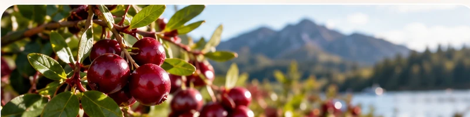
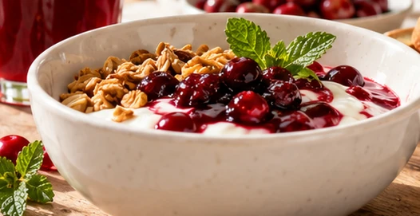
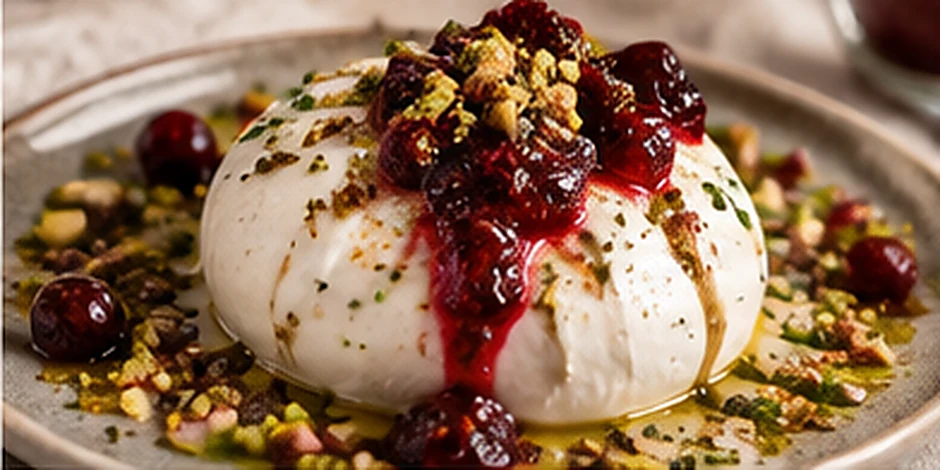
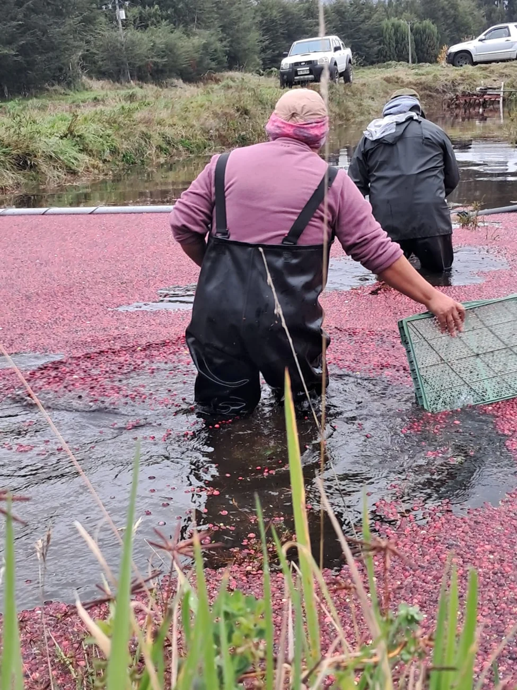

100% Natural
Ingredientes de origen natural.
El poder natural del cranberry
Sabores auténticos, ingredientes naturales y todo el bienestar del cranberry, directo de la naturaleza a tu mesa.
Conoce nuestros productosIngredientes de origen natural.
Disfruta un sabor puro y auténtico.
Cranberry seleccionado de la más alta calidad.

Nuestra esencia
En CRAN ENSENADA compartimos lo mejor del cranberry con productos saludables, deliciosos y elaborados con un profundo respeto por la naturaleza.
Conoce nuestra historiaNuestra esencia en imágenes
Desde los paisajes de Ensenada hasta tu mesa. Descubre las manos, la naturaleza y la dedicación detrás de cada frasco de CRAN ENSENADA.

Inspiración en tu mesa
Dale un giro especial a tus mañanas con preparaciones simples, coloridas y llenas de sabor.
Ver recetasEL UNIVERSO CRAN
Historias gastronómicas, ideas para tu mesa y novedades de nuestro espacio digital.

Maridajes, inspiración y nuevas formas de disfrutar el cranberry cada día.
Explorar el blog ↗
Descubre información del catálogo, del recetario y de las funciones de nuestro sitio.
Ver noticias ↗